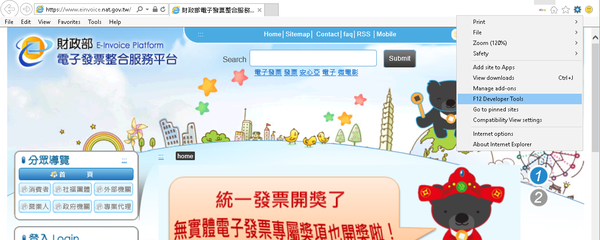
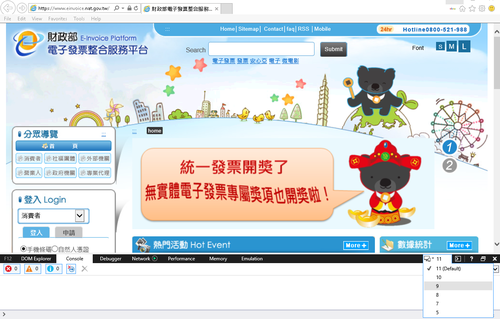

2017
Jun
04
要登入"電子發票整合服務平台"，只能用 IE 瀏覽器，而且版本還不能太新，如果你是用 Win 10 以上的版本，那麼內建的瀏覽器叫做 Edge 不是 IE ，Edge 沒辦法使用讀卡機，造成沒辦法用自然人憑證登入，解決的方式如下。
首先打開 Edge 連到電子發票整合服務平台的網址，接著點擊右上方的設定圖示，再選擇 Open with Internet Explorer，這樣 IE 就會自動開啟。

在新開啟的 IE ，一樣先輸入平台的網址，接著點擊右上方的設定圖示，再選擇 F12 Developer tools (開發者模式)。
接著瀏覽器下方就會出現一個小視窗，請選擇 Tab 中的第二個 console，再移到右邊有個數字 11 ，請把它改成 "9" 就是指切換到 IE 9 這個版本 。
再重試一次自然人憑證登入吧!